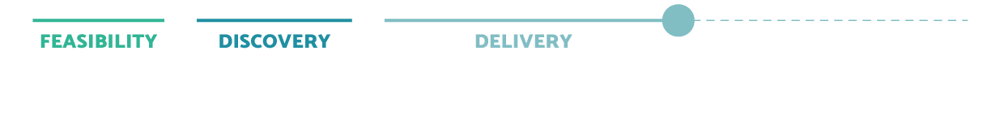
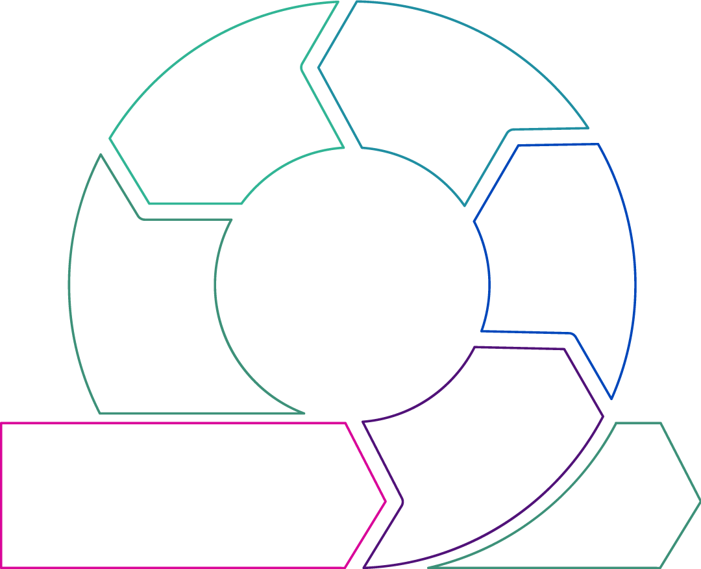
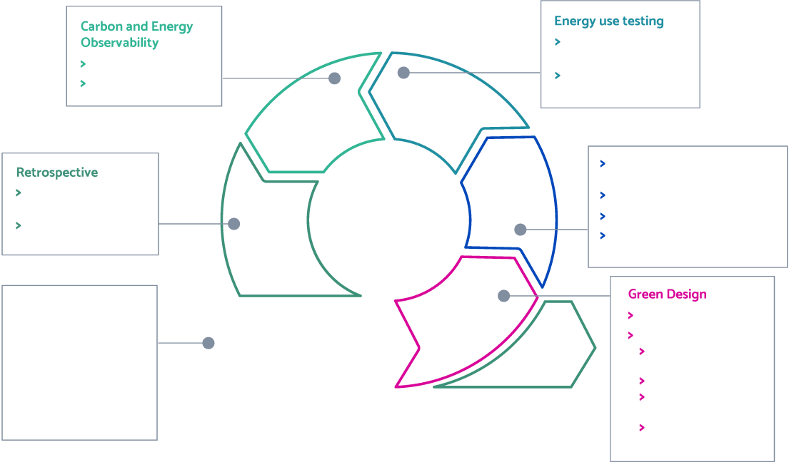

CONTENTS
One: Where is the software industry today on green software development?
Read now >Two: Introduction to the Sustainable Software Delivery Lifecycle
Read now >Three: Green software requirements
Read more >Four: Green software design
Read more >Five: Green software development
Read more >Six: Green software testing
Read more >Seven: Green software deployment & review
Read more >Eight: In Conclusion
Read more >The Information and Communications Technology (ICT) industry is responsible for up to 3.9% of global greenhouse gas (GHG) emissions today. This figure was 1.6% in 2007, and scholars at McMaster University predict it to reach a 14% share by 2040 as technology adoption continues to accelerate worldwide.
The challenge in reducing these emissions is multi-layered. But the impact of the energy used to power the hardware and software we build is a significant contributor to these statistics.
Compute power is becoming more and more efficient, performant, and readily available. As a result, software efficiency has taken a backseat in favor of developer productivity and delivery velocity. And with this behavior, GHG emissions from software are increasing somewhat unchecked.
The necessary drive to reduce emissions presents an excellent opportunity to interrupt this trend and place greater importance on software efficiency. While researchers have been looking into green software development for some years now, it is only recently that community sentiment has picked up steam.
We’re starting to see positive movement. But most people I speak to in software delivery are still relatively underinformed. They lack a clear understanding of technology’s impact on the environment and the steps they can take to improve things as part of their role.
One: Where is the Software Industry today on Green Software Development?
The industry’s understanding of green software development is still in its infancy. Today, the focus on the concept has been somewhat intangible, primarily through community building and awareness initiatives. These exercises all help to form the foundational puzzle pieces, but there is still limited evidence of tangible implementation advice for those who build software.
To date, the most advanced tangible aspect of green software delivery is measurement - specifically in the cloud. AWS, Azure, and GCP have each developed tools to measure and analyze cloud emissions. These are in addition to Cloud Carbon Footprint’s open-source measurement tool. But, these solutions provide variable granularity and transparency. In some cases, they don’t include embodied carbon – a proportional share of carbon emitted in the manufacture and disposal of the hardware itself and an essential factor in measurement.
This carbon can be a majority of the overall picture, and not measuring it can hide the true carbon impact of cloud services. Furthermore, if you rely on cloud measurements alone, you will likely miss many supporting systems (see box below) and all end-user devices. This can be another significant factor for a high-usage app or website.
Still, cloud measurement is a valuable piece of the overall picture and an essential part of green software development. It enables the observability of energy and carbon costs as used in the “test and learn” loop. Without cloud measurement, it becomes a challenge to identify the full scale of emissions and the impact any improvements may have had.
Cloud measurement tools are central to a CarbonOps approach, similar to FinOps, whereby you can monitor cost (in this case, carbon cost) and the actions taken to reduce expense over time. As a result, you can reduce the emissions of existing software already in production use.
This CarbonOps approach requires a starting point upon which to implement incremental improvement. When developing new software, the starting point does not exist until the system reaches a certain level of development and use, perhaps the MVP. This is especially true in the enterprise setting. Here, getting code into production use quickly may not be possible, and you may need to extend feedback loops over long release windows.
Considering this, if the software is designed and built with poor consideration of emissions, you may find yourself locked into a poorly optimized solution. One that is hard to improve, based on architectural decisions you cannot easily reverse. Waiting until you can measure is too late.
Beyond MVP, when building each new iteration, we want to give it our best shot as we develop and “test and learn” on top. This is especially true where release windows are far apart. We believe you can make greener software as you go by considering the concept throughout the software delivery lifecycle rather than treating it as an afterthought.
Contributors to emissions in software
In the introduction, we touched on the multi-layered nature of software emissions. To identify the different ways in which you can reduce software emissions, you need to understand what these layers are. This knowledge is vital to anyone working in software delivery who wants to reduce their software’s environmental impact.
The most apparent cause of emissions is the energy used by the software's hardware in each layer (database, business logic, middleware, user interface, etc.). The hardware’s energy consumption and associated manufacturing and disposal are to blame for creating these emissions.
Additionally, there is a range of supporting systems involved in developing and operating software, for example:
- Continuous delivery pipelines
- Automated testing
- Idle compute
- Network transfer
- Storage
- Monitoring
- Logging
- Backups
- Failover/redundant resources.
Each of these may significantly contribute to overall emissions depending on the design of your software. For example, long-term data retention on large datasets or network transfer for streaming video to many users can increase your emissions. In understanding and reducing the emissions of software, you should also take into account supporting systems.
The Software Carbon Intensity Specification (alpha) is an open resource with further detail on this.
Two: Introduction to the Sustainable Software Delivery Lifecycle
Recap: the product and software delivery cycles
As discussed in the BJSS Enterprise Agile book, the product lifecycle describes the stages from the inception of an idea all the way through to build and eventual retirement. All products require some upfront work to get them to a state where they are sufficiently defined to start building and have enough substance to roll out to some or all users – the Minimum Viable Product (MVP). From here, the product is iterated, evolving to meet growing user needs.

The Agile software delivery lifecycle (SDLC) describes the activities undertaken in a product iteration when using an Agile development methodology. Below is the SDLC for Scrum.

By understanding the SDLC, we propose that an effective way to implement green software actions is to align them to the different activities in the Agile SDLC – a Sustainable Software Delivery Lifecycle.
Pre-Delivery
Before the team starts delivery, they must understand the carbon literacy concepts and their organization's climate strategy. Knowledge of these will support the critical thinking required to build greener software.
Carbon literacy
Your delivery team must be familiar with the fundamental concepts of energy usage, carbon emissions, and the actions you can take when designing and building software to reduce carbon emissions.
Awareness of critical concepts such as carbon intensity (combined and marginal) and embodied carbon provides teams with the knowledge needed to understand the environmental impact of their decisions.
As you read this article, you’ll see that a great deal of critical thinking is required to develop greener software, and carbon literacy is necessary to support that.
Microsoft has a short learning module on sustainable software engineering principles, which the company has designed for those working in software delivery. It’s worth each of your team members taking an hour to read through this and take it on board – it’s the same set of topics covered here.
These principles will be expanded to include patterns and practices in the near future, making them a more useful practical resource. Additionally, the Green Software Foundation is developing a green software development certification with the aim of having 1 million certified globally before the close of 2023. Though in development currently, it’s worth keeping an eye out for its release.
Finally, we also recommend giving people some time to do their own research. There’s a considerable amount of information, and it’s a great learning experience to work through it naturally.
Understand your organization’s climate strategy, if it has one
As with any technology delivery, it must align with the business strategy in some way, and this is true in the case of sustainability. For example, you will need to:
- Understand how the project, product, system, or technology supports the organization in achieving its climate goals. What are the mechanisms by which the technology will deliver the desired change?
- Be sure that all the team knows how the project aligns with the sustainability goals and outcomes of the organization
- Be clear on who your climate or sustainability stakeholders are inside and outside of the business. Document and manage this list throughout the project lifecycle in a stakeholder map. You can use this article to identify each person's vested interest in the project's outcome from a sustainability perspective. Types of stakeholders to consider include:
- Champions: those whose job it is to deliver and promote sustainable outcomes
- Advocates: those passionate about sustainability, even if it’s not part of their responsibilities.
This understanding will empower your software delivery teams to make green decisions throughout development and demonstrate their alignment with your organization’s strategy and stakeholder needs.
Numerous trade-offs and balances will impact both the green credentials of your software and the cost, effort and time taken to develop features. Ensuring alignment with organizational strategy will help balance those decisions with green software development in mind.
Delivery
As a familiar and well-trodden pattern, we believe green thinking can be anchored to the Agile SDLC, ensuring consideration is given to energy use at each stage.
We’ll walk through each aspect of the Agile SDLC below and propose some considerations, actions, and resources that could support green software delivery in each stage.
Some of the ideas below are good software delivery practices with sustainable outcomes. Many of them align with other positive outcomes, such as cost reduction. Where this is the case, you can always add a green lens to ensure you prioritize decisions with sustainability in mind.
It's worth noting that whichever Agile approach you take, or even if you aren’t using Agile, you can still apply the below ideas to your methodology. Most of these ideas aren’t tied to a specific approach; you can interpret and apply them to any software delivery methodology.

Build vs. Operational Emissions
“Our pilot covering 30 software products across different industry sectors, including financial services, government, and software companies, has shown that there are high carbon emissions costs related to the build and the operation of software.
A key stat stands out for us when we look back at the results: the total annualized run impact can be up to 129% of the original build cost of the software. That's the ongoing impact every year the software is in operation. The good news is that we are also calculating actions that can reduce those run costs by up to 45%."Eric Zie, CEO, GoCodeGreen
A piece of software’s build and operations have an emissions impact, the balance of that impact is important to know. If the emissions impact of building software was an order of magnitude larger than operating it, then it would also demand an order of magnitude more time and effort when it comes to improvement.
However, as Eric Zie, CEO of GoCodeGreen, explains in the quote above, the emissions impact of operating software can be higher than the entire original build impact. Not only that, but it can be higher even within a single year of operation. This demonstrates the importance of reducing the operational carbon emissions of the software you build.
Three: Green Software Requirements
Do I really need it?
“There is nothing so useless as doing efficiently that which should not be done at all.”
Peter Drucker
Software bloat is common, especially in the enterprise setting. Oft-quoted Standish Group research claimed that 64% of enterprise software features are rarely (19%) or never (45%) used. Further on, a larger set of data in 2014 estimated that 50% of features are hardly ever used and 80% have low to no value.
While these statistics have been regularly discussed and challenged in Agile circles and have aged a degree, in our experience, they still hold true in many enterprises. There are undoubtedly good practice approaches in modern software delivery that aim to reduce waste, for example, Lean software development. But these aren’t always adopted effectively in the enterprise, and software development regularly leads to bloat and overcomplication.
Given this, perhaps one of the most significant impacts you can make is asking: “Do I really need this? Should I even build it at all?”
Creating more minimal software is a straightforward way to reduce build and operational emissions. Of course, this won’t work if you replace one rejected feature with another; “more minimal software” is the key concept here.
By building more minimal software, you’ll gain many other benefits too. You’ll refactor less, the software will be far easier to operate, cost less, be less complex, and what you create will be easier to observe and further improve the green credentials. You’ll also be able to get the software to your users more quickly.
You can use the additional bandwidth in your team to improve the efficiency of what you have built rather than simply building more. You can even decommission features that you feel are no longer well used.
In an enterprise, this can be incredibly challenging. Many stakeholders have differing views of what is minimally viable in terms of features and non-functional requirements. There will be a range of business stakeholders, user representatives, and teams with non-functional requirements of you; risk, regulatory, security, and more.
It is not uncommon for many requirements to be conveyed as a “must have,” and stakeholders will often overstate non-functionals. You will need to help stakeholders question their perceived needs and demonstrate how a more minimal solution will provide greater benefits with appropriate compromise.
A typical project in enterprise-scale organizations is application modernization. When modernizing or replacing a large, embedded system, it can be challenging to apply the minimalist mindset. The default, usually incorrect position, is often to build a replacement with the same features as the previous one with more on top and switch them over in a “big bang” approach.
It’s almost impossible to observe a legacy system’s real-world use. Metrics aren’t always available, and injecting them can be challenging. As a result, the simple assumption is that you need all the features in the replacement. You’ll then end up rebuilding all the previous bloat, significantly impacting the software’s emissions and efficiency.
In this case, it is essential to discover whether what you already have is even the right thing given the needs today and whether incremental replacement patterns are an option, as they can provide an effective way to build, measure, learn, and improve as you go.
Non-functional requirements and sustainability as a non-functional need
In the early stages of the software lifecycle, you agree upon and define a product's non-functional requirements (NFRs). Through this process, you make trade-offs between non-functional needs and factors such as cost or complexity.
The same is true of sustainability. Trading-off NFRs, such as response time or availability, will lead to architectures that require fewer resources and, in turn, less energy.
By introducing sustainability into conversations about NFRs from day one, you can enable NFR trade-off discussions and question the service levels driving them.
Commonly, NFRs are greater than the actual needs of an application, and you should encourage discussions that probe and test whether, for example, 99.99% availability is a necessity and upon what assumptions this necessity is based.
An essential aspect of NFR balance is explaining the different solution options that NFRs drive, the potential energy and carbon impact, and the difference in service provided in each option. For example, the difference between pilot light, warm standby, or multi-site active/active disaster recovery approaches and their potential impact on emissions and service recovery time.
For this reason, you should involve an architect with a good understanding of green software development principles in the NFR design process. NFRs are the foundation of software architecture, and their knowledge of solution options will help stakeholders agree on a realistic set of NFRs that can also help reduce energy use.
It is also wise to revisit NFR decisions at key points in the green software development process. Assumptions that led to their initial definition may have changed, as may have your software’s usage. Architects will continue to design new capabilities to meet the NFRs, and if there is reason to loosen them, this can lead to greater efficiency in new developments.
Four: Green Software Design
Green Architecture
Architectural decisions have some of the largest potential influences on software carbon intensity. They are also some of the most fundamental choices and hardest to back out of at a later point.
These decisions significantly affect the amount of hardware you use, how efficiently you utilize that hardware, and the amount of data you store or send over networks when operating software.
To ensure that you can make decisions with energy use and emissions in mind, architects must learn about sustainability concepts and take the time to understand how they can apply them to their designs.
As discussed, the industry is early in the green software development journey. While green principles are essential for any architect, there is limited implementation information about good patterns and practices.
Given this, architects will need to put effort into assessing the potential emissions impact of different options. You may need to undertake spike work where differences are not evident on paper. You can use the eight green principles to help support this process, as well as the three categories of actions that can reduce emissions, as defined by the Green Software Foundation:
- Energy Efficiency: Actions taken to make software use less electricity to perform the same function
- Hardware Efficiency: Actions taken to build software using fewer physical resources to perform the same function
- Carbon Awareness: Actions taken to time or region-shift software computation to take advantage of clean, renewable, or low carbon sources of electricity.
Taking these into account will support greener decision making. But it’s an inexact science when the scale of emissions resulting from a decision is often difficult to quantify, especially when software is not live and measurable.
To create a green architecture culture, you should include references to sustainability motivations, assumptions, and implications in your key design decision (KDD) or architecture decision record (ADR) templates – prompting architects to include these aspects as part of their decision making.
Minimal Architecture
We’ve already discussed the green benefits of building minimal software in the requirements section. As well as reducing waste by limiting features to those that are valuable, developing minimal software also means using minimal architectures. It’s not unusual to see applications designed to support theoretical futures rather than implemented efficiently to support the known existing scenarios. Challenging the necessity of NFRs will help you build minimal architecture, as will a culture of developing minimally.
Below are some examples of minimal architecture decisions you may take as an architect:
- Don’t distribute until you need to – a modular monolith is often a great place to start and will reduce complexity until required
- Select lightweight container management tools such as Docker Swarm over heavyweight container management if suitable for your use case
- Replace a long-running service with a simple Function as a Service
- For pub-sub messaging, do you need a Kafka cluster, or at your expected medium-term scale, could you use Redis, for example?
Much like minimal requirements, minimal architectures provide many other benefits outside of software carbon intensity; lower cost, complexity, and maintenance effort, for example.
API Design
An overly sparse API may lead to client code needing to make multiple requests to a server. This ‘chattiness’ is highly inefficient as each call has an amount of processing, memory, and networking overhead, each of which will add to your software’s carbon intensity.
Conversely, a particularly verbose API may also be inefficient as some or perhaps even most of the data will have been retrieved, communicated, and processed only to be discarded as superfluous by the client code.
Getting the correct balance will require a good deal of knowledge about the actual API usage, which may have multiple clients. Futureproofing an API may be prudent and avoid future development costs but may prove unnecessary and have a negative carbon impact on an ongoing basis.
There are several choices in developing an API approach that will impact efficiency. API architecture (e.g., REST, GraphQL, gRPC), protocol (TCP, UDP, custom wire protocols), and the data format used for request/response of your APIs, each have a balance of efficiency against other factors such as ease of debugging and development effort.
GraphQL can give you the ability to only request the data you need rather than a uniform response (lessening the burden of API verbosity). REST is ubiquitous, quick to develop, more general purpose, and potentially less efficient. gRPC is lightweight, efficient, harder to debug, and more effortful to develop.
Typical data formats used with enterprise APIs are human-readable such as JSON or XML. Often humans do not read the data, certainly not in production use. This introduces inefficiency (verbosity) in favor of simplicity but provides a clear advantage during development and debugging. Serialized data formats can increase processing and data transfer efficiency, for example, Protocol Buffers used by gRPC.
Examples of Green Architecture Decisions
At the time of writing, there isn’t an open list of common green architecture patterns and practices in modern software delivery that you can crib from when architecting software.
The green software foundation plans to introduce a list of patterns and practices to its green principles that will fill some of this gap and hopefully provide an excellent resource that the community can input into openly. For now, it provides a limited but valuable set of examples to bring the principles to life.
The following list provides some examples of common architectural decisions that can make a significant difference to the green credentials of the software you build.
Choice of programming language
Some languages are naturally more efficient than others. Of course, there is much more detail than that statement would suggest. Still, research shows that compiled languages tend to be the fastest and most energy-efficient, followed by virtual machine, and finally, interpreted languages.
According to research, Python performs in the bottom five of 27 languages. This finding is notable due to the language’s popularity (at the time of writing, it holds the top position in the TIOBE language index) and its prominent use in large-scale data platforms and analytics. As a result, Python applications can potentially generate colossal energy use in large-scale processing, storage, and network transfer. It’s also very easy to introduce inefficiency into these solutions, given their distributed and complex nature.
Public cloud, choice of provider, and region
Public cloud infrastructure is significantly more energy efficient than on-prem or enterprise data centers. Cloud-native services also utilize hardware more efficiently. Depending on the region, the carbon intensity of the energy supply can be better depending on the mix of energy supply that powers the local grid.
Cloud providers each have differing sustainability commitments and progress. Therefore, your cloud provider choice and their operating region(s) can make a difference to your software’s green credentials. The creators behind Cloud Carbon Footprint have developed a methodology to calculate cloud emissions and Climatiq has used this approach to effectively visualize how different data centers compare in terms of carbon intensity.
It's worth noting that cloud vendor claims of 100% renewable energy can be a little misleading. As you can see in the Climatiq article, cloud data centers have varying carbon intensity levels, sometimes a very high (e.g., Indonesia). While cloud vendors put a great deal of investment into renewable energy, it is often not possible to feed this renewable energy into the grids powering their data centers – it is instead a form of carbon offset. Local grids still produce carbon to generate their energy and this carbon intensity should be used for decision-making, rather than an assumption that “100% renewable energy” means zero carbon by-products.
Platform as a Service (PaaS) and Serverless (e.g., Function as a Service (FaaS))
PaaS and Serverless public cloud services are highly efficient uses of hardware. Cloud vendors have designed them to make the best possible use of available hardware resources, leading to far less idle time and significantly reduced energy use in many cases.
But it is worth noting that using FaaS can lead to the development of overly small units with high amounts of network chatter and unnecessary complication, especially at enterprise scale. This is worth considering when developing large-scale software highly reliant on FaaS.
Containers
Containers can provide an effective way to maximize the utilization of available hardware if orchestrated effectively. Using cloud-managed container orchestration (or serverless containers) can further increase this benefit.
You should take care to maximize the efficiency of the containers and their orchestration, requiring expert input in development and operation.
Scheduling and batch vs. real-time
With the ease of access to cloud-managed services that enable event-driven response, there is a natural lean towards these patterns where it may be unnecessary given non-functional requirements.
For those things that do not need this immediacy, and may happen thousands or millions of times over, consider scheduling batch activities to run at another time or even in another region.
By being aware of energy’s carbon intensity at different times of the day and in different locations, you can benefit from both batch execution efficiencies and lower emissions. Note that you will need to use forecast marginal carbon intensity rather than the combined carbon intensity of the grid. Marginal power sources will often have a greater intensity than combined.
In advanced cases, you could develop schedulers to automate scheduling based on batch latency requirements and marginal carbon intensity in different cloud regions and times. Such a scheduler will automate running the task in the most carbon efficient way given boundaries for the latency of return. GCP uses this approach for its batch scheduling, for example.
Another example is a paper on building carbon awareness into the Kubernetes Scheduler. APIs such as Watttime or Electricity Maps are available to query carbon intensity. They can also predict real-time, forecast, and marginal historical intensity using machine learning.
There are a host of other things you can do, some of them small but easy to overlook, such as cleaning up stored objects when no longer in use and setting appropriate retention periods for data and backups.
The AWS Well-Architected Sustainability Pillar documentation has some specific examples worth noting, and we’d recommend reading their documentation.
Cost and Sustainability
In many cases, reducing operational costs and sustainability are aligned. Building software that uses less energy and hardware will typically be cheaper to operate. But this isn’t necessarily true of the build phase, where the effort to build or refactor more efficient software can be greater, reducing your velocity.
As hardware becomes more efficient over time (Moore’s Law), software becomes less so. There has been a reducing need to account for hardware limitations, especially when compared to the business value of increased velocity.
Software efficiency halves every 18 months, compensating Moore’s Law
May’s Law
Typically, this velocity vs. efficiency trade-off falls in favor of velocity unless the operational cost gains of efficiency are great enough to make it worthwhile. By including the sustainability benefits of efficiency, you can make a greater case to reduce velocity in favor of building more efficient software and reversing this trend somewhat.
Still, the emissions benefit of point decisions is likely hard to quantify and value, making a trade-off challenging to support. This demonstrates the importance of a validated, open library of good practices and patterns that have been measured to show the typical impact of these practices.
Five: Green Software Development
Moving from green architecture to green software development. Designing and writing efficient code is critical to reducing energy use.
Simplicity and Efficiency Trade-offs
There are many trade-offs when developing software - an important one in green software development is between simplicity and efficiency. One we’ve seen examples of already in the architecture section and closely aligned to the box-out on cost and sustainability.
For example, consider two sorting algorithms - insertion sort and merge sort.
Insertion sort takes each element of the unsorted list and moves it into the correct place in a new list. The code will be simple for most developers to understand. This will likely mean faster development, few functional bugs, and an easily maintainable piece of code. But insertion sort has a worst-case time complexity of O(n^2), meaning that as the amount of data increases, the time taken increases proportionally to the square of the increase in data. This can be highly inefficient in terms of running time and thus energy use.
Merge sort, in contrast, is more complex to explain, involving splitting a list into several sublists, recursively sorting them, then merging the result. The code for this will take longer to develop, be more complex, harder to understand and maintain, and potentially more likely to contain bugs. But it has a time complexity of O(n log n), meaning the time taken to sort a list increases linearly with the number of elements to sort, resulting in less energy use, perhaps meaningfully so for large amounts of data.
Which is the correct choice for software engineers is not straightforward. They will need to consider the system's non-functional requirements, the knowledge level of the developers likely to be maintaining the system, and the variance in data the system will process.
Of course, this is a contrived example. It would be unusual in an enterprise setting to implement a sorting algorithm. Instead, the complexity tends to be hidden in a library that we expect to be well tested. However, in a particular domain, many comparable trade-offs can be made. It’s likely down to the developer to understand how to apply this trade-off, and their experience will play a significant part in the outcome.
Over time and due mainly to Moore’s Law, these trade-off decisions have tended to favor simpler and quicker to write code as memory has become cheap and plentiful and processing becomes ever-more efficient. But it’s now time to revisit this, considering the knowledge that these decisions also impact our environment.
Efficient Software
Algorithms and data structures
The example used above is one of algorithmic efficiency. Choosing more efficient algorithms for the expected data will likely have the most significant impact on carbon emissions at the lowest level of the stack.
We do not always need the perfect result and can sometimes balance the quality of the outcome with the algorithm's efficiency. These are known as approximation algorithms and are very popular in some areas, such as route finding.
Outcome quality vs. efficiency is also an essential factor in machine learning, where additional algorithmic improvement can come at the cost of exponential increases in model training time, energy, and emissions. It’s not unusual that even a small percentage increase in the performance of an already well-tuned model may require an order of magnitude more processing power.
Hand in hand with algorithmic efficiency is choosing appropriate data structures. For instance, if, as part of an algorithm, it will be necessary to search for elements in a list, we may consider using collections based on hashing functions and ensure the hashing function has an appropriate distribution over the expected data set. This will reduce processor cycles as we will not need to traverse the entire collection.
We may also consider an algorithm's trade-off between processing and memory usage. We may have opportunities to store derived data which will reduce duplicate processing. We may do this in the form of a cache or possibly at the database layer using materialized views.
An algorithm's true efficiency will depend on the actual data it processes. Understanding the characteristics of production data is, therefore, vital. In particular, you need to understand the data variety and expected volume.
Time efficiency ! = carbon savings
We must also remember that while the time efficiency of algorithms and software carbon intensity are related, they are not always directly proportional. For example, greater parallelism can improve time efficiency, but greater parallelism means more energy use, which may not decrease our software’s carbon intensity.
Software reduction
Reduction in software engineering is the practice of reusing a library that solves a more general problem before reducing the result to what is needed rather than writing more specific new code. This approach is vital to productivity and sometimes security in enterprise engineering but does have a software efficiency trade-off.
Again, the decision for the software engineer is to determine when the impact of reduction is too great. One way to help make this decision is to understand the library code and how it works and make profiling tools part of the engineering process. There is further discussion on the use of profiling tools below.
Engineer for change
As established, there are many trade-offs during development. Often it is hard to quantify a development decision’s carbon intensity impact. But many software development principles can make it easier to defer some of the decisions.
Most fundamentally, the principle to separate units of code around responsibilities and reasons to change is commonly referred to as the Single Responsibility Principle or Composite Reuse Principle.
Applying this principle will ensure that when an engineer does decide that a more efficient algorithm is needed, the existing algorithm is not intertwined with other code areas. If we know upfront that change is likely, it would also be wise to ensure you develop a specific interface for the behavior (following the Interface Segregation Principle). Perhaps the specific implementation can be quickly injected into the codebase using an Inversion of Control container or an Abstract Factory if we’re looking to keep things simple.
Efficient Continuous Delivery
Efficient integration and delivery pipelines
The product running in production is not the only contributor to carbon emissions and, therefore, not the only opportunity for reduction. We must also consider:
- Non-production environments, including various flavors of test environments
- The integration and continuous delivery pipelines and processes
- Development machines.
In this article, we do not consider development machines further though these and associated peripherals, such as monitors, account for some of the carbon cost of delivering software.
Environments
What is necessary for a production environment may not be required for each environment on the path to live.
Production aside, performance testing environments tend to be the only environments that need to mirror the scale. With the advent of cloud computing and Infrastructure as Code (IaC), it has become simpler to create standardized environments. With a little more intelligence in that code, we can consciously vary those environments and scale them for a given usage. For example, Terragrunt extends the out-of-the-box capabilities of Terraform to offer this flexibility.
Given that IaC lessens the burden of environment creation (and destruction), we should also consider creating environments on demand and destroying them when we are finished.
Phantom power usage is generally associated with equipment around the home that is on but unused, continually drawing energy but not providing benefit. This term is also relevant to the many cloud environments which run unnecessarily.
Moving to an on-demand model can also remove process bottlenecks associated with pre-provisioned environments.
Pipeline processes
Another path to live carbon cost is in the processing associated with running pipelines. Again, machines doing this processing should be ‘right-sized’ and ephemeral where possible. Even better, you could switch to cloud-native technologies that can make hardware more efficient.
As stated earlier in this article, the largest carbon saving is to ask the question as to whether the product or functionality is necessary in the first place.
Applying this to pipelines, we should therefore question whether each build we run is necessary or whether we trigger the build automatically because we can.
You can design the development team’s branching strategy to consider this and build automatically only for shared branches or when you raise a merge request.
Build carbon efficiency into quality processes
Understanding what makes efficient software and what makes efficient delivery pipelines is not necessarily enough. Many software engineers claim to have a good knowledge of software design and maintainability. Still, many software systems suffer from problems in these areas and much unknown technical debt.
To address this, we follow quality processes and bake them into our delivery approach and culture. These should be updated to include carbon efficiency as a desired outcome.
Code and design review
At BJSS, we advocate thorough code and code design reviews. We prefer to shift this left where possible to avoid redundant work or the temptation to stay with a suboptimal solution.
Such reviews should also consider the abovementioned aspects, such as algorithmic and API efficiencies, and the importance of ensuring that you size environment provisioning appropriately.
Making technical decisions consciously and allowing scrutiny
As the green architecture section discussed, you should document decisions using Key Design Decisions (KDDs) or Architectural Decision Records (ADRs). These needn’t be architectural in level but could be lower-level choices. While documentation is prudent, you must make these decisions consciously and with the best information available.
‘Cargo cult programming’ - the practice of blindly copying code or approaches without understanding - is all too commonplace in software development. Questioning such methods and insisting on the need to document key decisions can help avoid this.
Questioning requirements
In an Agile environment, software requirements are not the preserve of business analysts. Engineers should be included in gathering and refining requirements and will bring a unique perspective.
They should be encouraged to bring an environmental lens to those discussions and use their knowledge to make suggestions early in the process and throughout development to offer more carbon efficient or aware solutions.
Sustainability debt
Technical debt is inevitable on projects. We can accrue technical debt consciously or by accident. Perhaps we become aware of alternative, more appropriate technologies or were unaware of all the facts during the initial development of a feature.
Given the difficulty of estimating carbon costs during development, we could choose to delay adding complexity – see engineering for change. If we do so, we must re-evaluate those decisions at a sensible cadence. The most natural way to do this seems to be to treat ‘sustainability debt’ as a type of technical debt.
Once you’ve included this new debt, ensuring that your usual processes around technical debt management are robust is essential. You should evaluate, prioritize, and rectify that debt appropriately before the interest rate is overly onerous.
Profiling tools and static analysis
Depending on the system’s nature, performance, and load requirements, performance profiling tooling may be used during development or live running.
These tools can be either intrusive or non-intrusive and can present information showing how load affects different parts of the system, highlighting bottlenecks and sub-optimal code. Although commonly run locally or in conjunction with a performance test suite in a dedicated environment, they can also continuously run during production and connect to automated alerting systems.
Including these in your system and its associated delivery – even without stringent performance requirements - could have an environmental benefit.
Similarly, and with less investment, static code analysis can often spot suboptimal code. Developers can use static code analyzers, integrate them with IDEs, or run them in integration pipelines, with results inspected in dashboards.
There are some early attempts to include green considerations in static analysis. CAST GreenIT Index is an automated green source code measure. ecoCode plugin for SonarQube looks to codify 115 rules based on a French book on green web development, and the green software foundation has plans to develop solutions in this space too.
It’s important to note that we do not claim to have tried any of these static analysis solutions; they are still very early in their maturity.
Six: Green Software Testing
While the topics covered so far are in their infancy but developing in the industry, there is little discussion about the role that testing has to play in green software development.
In addition to verifying software functionality, testing is where we assure that we meet our non-functional needs. If we treat emissions as a non-functional need, is it an appropriate place to hold ourselves accountable for our software's energy use and emissions?
What constitutes a test pass or fail? There often won’t be a quantifiable number that you can test an emissions pass/fail against, at least not until green software development becomes a much more mature field. But this doesn’t mean we can’t still measure, baseline, and understand the impact of new features and releases on the overall emissions picture.
Detecting unexpected changes
Given that we most likely don’t understand what constitutes a pass/fail for emissions, can we baseline an application’s energy use and emissions in test, and then use this baseline to understand the relative change against the baseline of future releases?
To create a good baseline, we would need to measure or model a few things at least, for example:
- Cloud energy use and emissions (including embodied) using cloud provider tools, or the cloud carbon footprint tool
- Non-cloud hardware energy use and emissions (including embodied carbon) using watt-hour meters or energy profilers
- End-user device energy use (and embodied carbon) using a watt-hour meter, an energy profiler, or a SaaS tool such as Greenspector (which runs web pages on real mobile devices and measures energy use). In many cases, this is vital as end-user devices may significantly affect software energy use. Hardware power monitors are typically the most accurate way to measure end-user device energy use; however, they require the disassembly of mobile devices to connect directly to the power source.
The Green Software Foundation has already developed an alpha version of a specification for measuring software’s carbon intensity - the SCI Specification.
While the equation is relatively simple, it’s not necessarily easy to calculate the numbers needed, and there is room for plenty of interpretation. The score is designed for benchmarking. As long as it is calculated consistently between releases, it will be sensitive to changes in the carbon intensity of your software caused by green software actions – demonstrating the impact that the changes between each calculation have had.
With a measurement approach and baseline in place, it should be possible to alert to unexpected changes proportional to the baseline as part of the test approach. But this might not be easy to fully automate today, given the currently available tools and need for hardware meters.
Another worthwhile benefit to using the SCI Specification for your internal measurement is the ability to publish your calculation, evidencing both the green credentials of your software today and the impact of improvements you have made in your releases. This could be a powerful way to show potential users that you are making sustainability an essential part of your work.
Change aware testing
In modern Agile development, tests are automated. There are significant test packs at each testing level, and whenever code is changed, the tests are often all run to verify that change. This goes from running unit test packs on a developer machine to running integration and UI tests (among others) during a CI build.
Each of these runs has an energy cost. For large enterprises with many large software solutions, datasets, and test suites, the impact could be significant (in energy, emissions, and time) – it’s certainly not rare for full regression packs to take hours to run.
The ultimate example of this is the testing approach taken by Meta and Google. For example, Google has developed a change-aware testing system for its Test Automation Platform, which carries out more than 150 million daily test runs. Even with Google’s massive compute resources, it was impossible to test code commits individually, and its solution limits test execution based on code changes. As well as widening a bottleneck, this will significantly impact energy use and emissions.
Approaches to change aware testing run from tagging tests to control which are run depending on the context of code changes (e.g., run all tests that exercise the shopping cart functionality), through to Test Impact Analysis and even Predictive Test Selection at the advanced end of the spectrum.
Pioneered by Microsoft, Test Impact Analysis analyzes the call graph when running tests and uses this analysis to determine which tests to run to exercise future production tests.
Predictive Test Selection uses machine learning to predict which tests to run based on an extensive historical dataset of test outcomes – for example, see this research paper by Meta.
Test Impact Analysis is available in Visual Studio, and you can apply it to Azure Pipelines. Also, there are testing and CD frameworks that support this approach. You could even implement something yourself. Predictive Test Selection is just starting to reach availability in tooling such as Gradle Enterprise.
Seven: Green Software Deployment & Review
We’ve joined deployment and review here as they are closely linked and introduce a vital combined topic.
Observability and CarbonOps
An essential part of green software development is the ability to test, learn and improve – measurement and optimization is the last of the green software principles. This feedback loop is enabled by deploying the right tools and metrics to provide detailed observations of the application, hardware, and supporting systems, while under use. This includes information on how users interact with the software, hardware utilization, energy use, and emissions. By observing these things, you can:
- Understand where opportunities are to implement green actions (see green architecture) and feed them into the backlog for future inclusion. For example, identifying opportunities to consolidate compute, right size environments, or where emissions hot spots exist and how we might refactor to reduce them
- Understand how an application is used to focus on areas your users find valuable and retire unused features. User activity telemetry enables you to build more efficient software based on real-world usage. But it can take a culture shift to retire features that evidence low usage or value. This telemetry can also provide insight into how features are used, allowing you to develop efficiencies to support popular features
- Measure and understand the impact of changes and optimizations you have made in a release. This is important as it is often difficult to accurately understand the level of impact that changes and optimizations will have before they are deployed and used in anger. This is especially true in an enterprise environment that may have fewer regular production releases. By collecting telemetry, you can calculate the real-world impact of changes, which you could eventually use to assign a sustainability “value” to your improvements and even create a view of the cost vs value relationship.
A recent but important form of observability tool for green software delivery is Emissions Monitoring. As discussed, all the major cloud vendors provide operational reporting on cloud emissions. These give a simple way to report, understand, and refine the environmental impact of your estate. Some vendors can determine the generation of hardware, physical building location, and other factors that allow for more accurate measurements. Even within one logical cloud region, there can be variations.
Using these tools enables an approach to incremental improvement similar to FinOps, which we call CarbonOps. Where FinOps brings financial accountability to the cloud, CarbonOps brings energy and emissions accountability. Through the analysis of observations across the application and infrastructure, we can propose and implement optimizations that reduce energy and emissions, much as we would with operational cost – and as discussed previously, the two are regularly well aligned.
Further Operational Considerations
Once a solution is delivered and deployed, the application enters a run state - part of the DevOps cycle - which takes learnings from actual production deployment, feeds back, and optimizes the solution via Continuous Improvement. As well as CarbonOps, there are further opportunities in this phase to drive greener software with reduced emissions, including:
Automation: Large complex enterprise systems often initially require manual tasks to support repeatable operational requests. These may be related to user management, external legacy integration, or process optimization, as examples. Continuous Improvement models help remove repeatable manual activities, reducing emissions. At BJSS, we believe modern operations should drive towards 100% automation of run-type activities, improving user experience while having a green benefit.
Housekeeping: Large systems, especially with thousands of users, can waste storage and compute resources. Therefore, it’s essential to ensure the hygiene of operational data. You can achieve this by offboarding inactive users, carrying out the timely removal of temporary resources, and implementing shorter retention policies. All of which can reduce your emissions impact. Reducing used storage is one factor, but less obvious may be the impact on compute that wasteful resources can cause, for example, impacting query speed.
Retrospectives and knowledge sharing
Given the early stage of green software development and delivery, assessing the impact of the approaches taken and changes made in retrospect is essential. This helps to understand the value returned for the effort spent on green approaches and identify those patterns and practices that have shown good value.
Retrospectives are a standard Agile tool for team members to share feedback on what has worked and what hasn’t. They also help develop actions that improve delivery incrementally.
As a new field, green software delivery would benefit from being discussed at retrospectives, sharing views within the team, identifying the practices and patterns that were deemed a success, and sharing these wider within your organization, or better yet, the green software community.
External Review and Certification
It’s always beneficial to have an independent review of major enterprise technology implementations, and while the availability of review that includes green software is minimal, there are some early options.
The first of these options, for those building in AWS, is an AWS Well-Architected Review (WAR). The addition of the sustainability pillar to the AWS Well-Architected Framework means that each review now considers the sustainability of AWS-based solutions. These are short (one to a few days) reviews of your cloud estate or workload that cover a range of important pillars of good cloud practice. Undoubtedly, Azure will soon add a sustainability pillar to its Well-Architected Framework.
The other option is to certify your product with an independent certification of your software’s green credentials. GoCodeGreen is an excellent example of this very early field of certification. In addition to improvement recommendations and peace of mind, you will also be able to publish this independent outcome to demonstrate your commitment to green software and sustainability.
Eight: In conclusion
Hopefully, this article has provided some interesting food for thought and brought together some existing resources and currently fragmented information about green software development.
As covered early on, the biggest thing you can do is ask, “do I really need this?”. This applies to everything, from whether you even need to build the software to the features you build, the architecture you design, the code you develop, and the tests you perform. Minimalism is key to the development of green solutions.
Many areas we’ve covered describe what may already be considered good practice; however, in many enterprise settings, good practice is not implemented effectively. This is another solid and purposeful reason to adopt such practices that will support the need for change. Additionally, many green software practices lead to lower operational costs as solutions use less hardware and energy.
The biggest challenge to developing greener software, however, is perhaps two-fold.
- The effort needed to apply theory and principle to actual implementation without well-proven, documented patterns and practices, much thought and experimentation must go into deciding what options are greenest and what impact they will make. In many cases, until you’ve tried it and got it live, you may not even know.
- The increased cost of developing green software. Building more efficient software takes time, and that time comes at a cost, both a direct cost of development and an opportunity cost of reduced feature delivery velocity.
Deciding to take on these challenges and accept the costs will be the real test of whether organizations intend to invest in developing more green software. Even if the costs are too high for you, there are things that you can do now to build lower carbon intensity software.
If you enjoyed this article, please consider downloading our eBook - Sustainability, FinOps & The Cloud: How to Reduce Cost & Emissions Through Resource Optimisation.